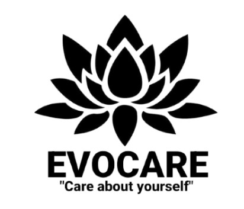
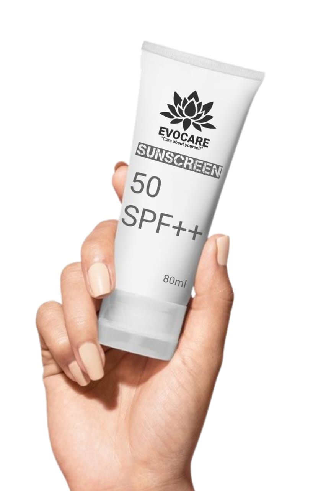
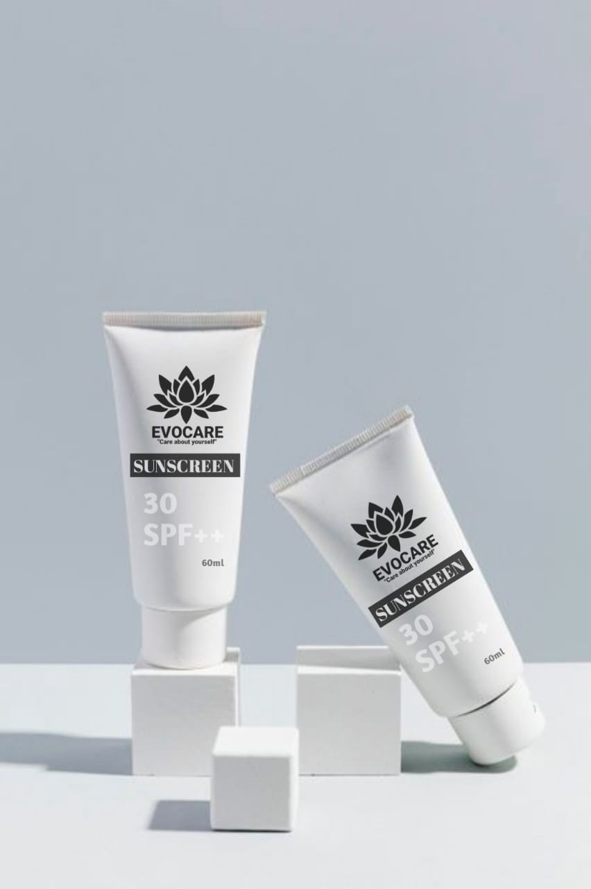

Profil Perusahaan
Evocare merupakan perusahaan yang menyediakan prduk yang melindungi kulit dari pancaran sinar matahari.
Perkembangan zaman pada saat ini sudah membuat teknologi menjadi sesuatu yang mempermudah untuk memberikan informasi. Dengan memanfaatkan teknologi maka informasi akan dengan pesat dibagikan.
Dengan memanfaatkan perkembangan zaman maka akan mempermudah pembagian informasi salah satunya dengan membuat website yang dapat diakses oleh semua orang.
Evocare menawarkan beberapa varian tabir surya sunscreen yang beragam seperti SPF30++ dan varian SPF50++.
produk yang ditawarkan memiliki komposisi bahan alami yang memberikan dampak yang baik
Produk Yang Ditawarkan :
SPF 50 memiliki kandungan yang lebih baik dibandingnkan SPF 30
| NO | PAKET PRODUK | HARGA | KETERANGAN |
|---|---|---|---|
| 1 | Chocolate Toast | Rp25.000 | Rasa Coklat |
| 2 | Cheese Toast | Rp20.000 | Rasa Keju |
| 3 | Peanut Toast | Rp22.000 | Rasa Kacang |
Evocare
Penasaran dengan rasa yang kami tawarkan dan ingin merasakan dengan cara memesan via online atau atau dine in langsung ke restoran.
Untuk pemesanan roti berbentuk bisa langsung menghubungi nomor di bawah ini :
Sutan Viqri Samudra : 0895-1667-0864
Dokumentasi Roti Bakar 88

Restoran Roti Bakar 88 bukan sekedar tempat makan. Pengalaman kuliner yang tak terlupakan. Dari sejarahnya yang mendalam hingga kreativitasnya, setiap aspek dari restoran ini mencerminkan hasrat mendalam terhadap cita rasa dan keindahan seni kuliner. Jika Anda mencari pengalaman bersantap yang luar biasa, jangan ragu untuk mencoba keajaiban dim entirety di Restoran Roti Bakar..
Proses Pembuatan :

Setiap roti yang yang ditawarkan merupakan hasil dari pembuatan roti dengan chef yang memiliki pengalaman pembuatan roti yang sudah terpecaya.
- Bahan Yang Berkualitas: Restoran roti bakar 88 sangat memperhatikan penggunaan bahan baku yang akan di olah karena dengan menggunakan bahan baku yang berkualitas maka akan memberikan rasa yang baik pada setiap gigitan roti.
- Koki Yang Berpengalaman: Koki yang memiliki pengalaman yang banyak memberikan pengalaman pembuatan rasa yang baik.
- Hasil Dari Olahan: Tidak hanya memberikan rasa yang menarik namun olahan roti bakar akan memberikan tampilan yang menarik sehingga tidak hanya menikmati rasa namun bisa menikmati visual.
Menmberikan pengalaman yang menarik

Restoran roti bakar 88 memberikan pengalaman yang luar biasa karena dapat memberikan kepuasan yang berkesan